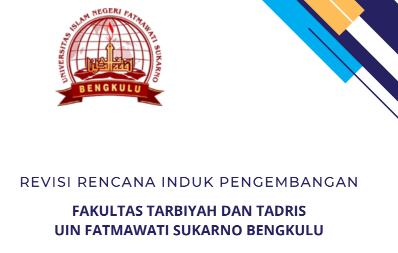

RIP FAKULTAS TARBIYAH DAN TADRIS UIN FATMAWATI SUKARNO BENGKULU
Puji syukur kami panjatkan ke hadirat Allah SWT atas segala limpahan rahmat, petunjuk, dan karunia-Nya yang senantiasa mengiringi langkah-langkah kita dalam menjalankan amanah di bidang pendidikan. Melalui kesempatan ini, kami dengan rendah hati mempersembahkan Rencana Induk Pengembangan Fakultas Tarbiyah dan Tadris sebagai upaya kami untuk terus meningkatkan kualitas layanan pendidikan dan kontribusi positif kami dalam memajukan dunia pendidikan. Fakultas Tarbiyah dan Tadris sebagai salah satu entitas pendidikan tinggi yang memiliki peran strategis dalam pembentukan tenaga pendidik berkualitas, kini dihadapkan pada beragam tantangan dan peluang di era globalisasi ini. Dalam konteks tersebut, upaya pengembangan yang berkelanjutan menjadi sebuah keharusan guna memastikan relevansi, efektivitas, dan daya saing fakultas ini dalam menyongsong masa depan yang lebih baik. Rencana Induk Pengembangan Fakultas Tarbiyah dan Tadris Universitas Islam Negeri Fatmawati Sukarno Bengkulu memiliki jangka panjang, jangka menengah, jangka pendek, serta mempunyai ruang lingkup yang luas. Rencana Induk ini tidak hanya merupakan sebuah dokumen strategis, tetapi juga cerminan dari komitmen kami untuk senantiasa meningkatkan mutu pendidikan dan kontribusi sosial fakultas ini kepada masyarakat. Melalui pendekatan holistik, kami merancang langkah-langkah konkret yang mencakup berbagai aspek, mulai dari peningkatan kualitas dosen hingga pengembangan kurikulum yang relevan dengan tuntutan zaman. Kami mengucapkan terima kasih yang sebesar-besarnya kepada semua pihak yang telah memberikan dukungan, masukan, dan kerjasama dalam penyusunan dokumen ini. Semoga Rencana Induk Pengembangan Fakultas Tarbiyah dan Tadris ini dapat menjadi panduan yang berharga bagi kita semua dalam mewujudkan visi dan misi fakultas untuk menjadi pusat unggulan dalam pembangunan sumber daya manusia yang berkualitas dalam bidang pendidikan.